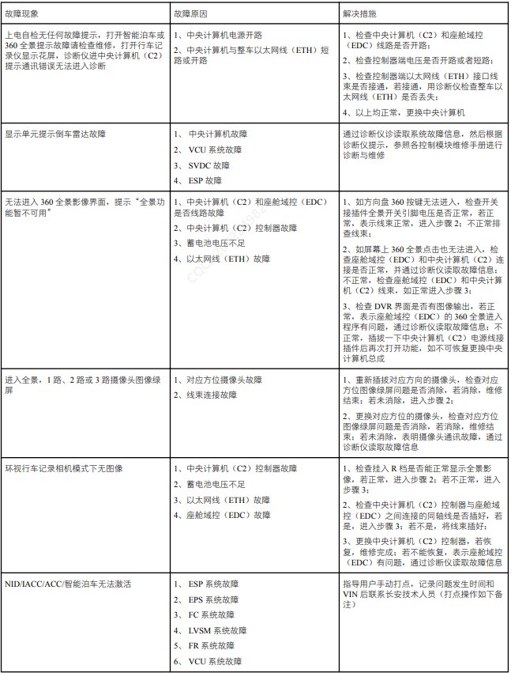
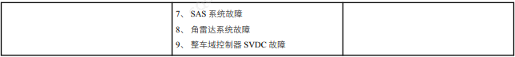
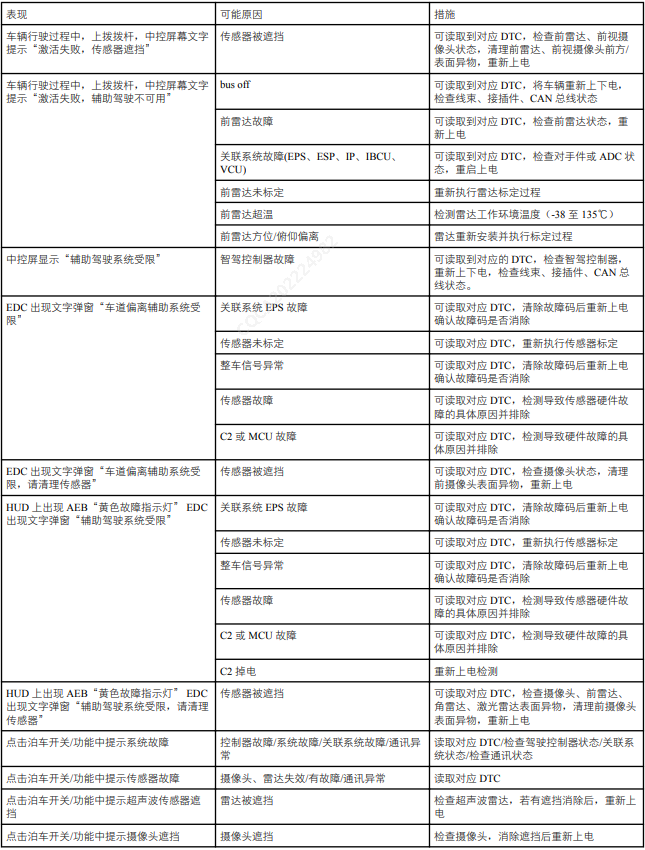

通用检查设备：车机诊断仪、电脑诊断仪等。
确认用户问题：
1. 目视检查是否有明显的机械、环境（水渍等）或电气损坏的痕迹；
2.目视检查机舱冷却液壶中的冷却液是否在最低液量之上。
3. 如果所观察或提出的问题的明显原因已经发现，则在进行下一步之前，必须先将此原因修正；
4. 如果目视检查通过，则 则通过诊断仪读取中央计算机的版本信息及故障并参考故障症状表进行维修，故障诊断表如下：
注意：完成故障维修后，务必清除中央计算机相关的故障码。
DTC故障码列表及简单排查方法
| 序号 | 类别 | 子类 | DTC码 | 故障类型与描述 | 可能故障原因 | 维修建议 | 关联控制器 |
| 1 | 系统级总线通信类 | 以太网传输 | U1B4A01 | 激光雷达以太网非预期的链接断开 | 线路断开或者对方设备掉电 | 检查线路连接以及对方设备运行情况 | Lidar |
| 2 | 系统级总线通信类 | 以太网传输 | U1B4A05 | 激光雷达链接稳定后以太网信号质量低 | 可能发送方以太网硬件故障，线缆质量差，外界干扰，或者线缆长度超过15米， | 更换硬件 检查通信线缆质量和长度 | Lidar |
| 3 | 系统级总线通信类 | 以太网传输 | U1B4D01 | VIU_FL_以太网非预期的链接断开 | 线路断开或者对方设备掉电 | 检查线路连接以及对方设备运行情况 | VIU_FL |
| 4 | 系统级总线通信类 | 以太网传输 | U1B4D05 | VIU_FL_链接稳定后以太网信号质量低 | 可能发送方以太网硬件故障，线缆质量差，外界干扰，或者线缆长度超过15米， | 更换硬件 检查通信线缆质量和长度 | VIU_FL |
| 5 | 系统级总线通信类 | 以太网传输 | U1B4E01 | EDC_以太网非预期的链接断开 | 线路断开或者对方设备掉电 | 检查线路连接以及对方设备运行情况 | EDC |
| 6 | 系统级总线通信类 | 以太网传输 | U1B4E05 | EDC_链接稳定后以太网信号质量低 | 可能发送方以太网硬件故障，线缆质量差，外界干扰，或者线缆长度超过15米， | 更换硬件 检查通信线缆质量和长度 | EDC |
| 7 | 电源电压监控类 | ECU Power | B190001 | 主电源电压故障 | 供电电压异常 | 检查蓄电池状态和发电机状态。 | - |
| 8 | 系统级总线通讯类 | 总线关闭 | U1B0001 | ADAS_CAN总线关闭 | CAN总线或ECU故障 | 检查CAN总线或更换ECU。 | VIU_FL |
| 9 | 系统级总线通讯类 | 总线关闭 | U1B0002 | ADASA1_CAN总线关闭 | CAN总线或ECU故障 | 检查CAN总线或更换ECU。 | FR |
| 10 | 系统级总线通讯类 | 总线关闭 | U1B0003 | ADASC1_CAN总线关闭 | CAN总线或ECU故障 | 检查CAN总线或更换ECU。 | 后角雷达 |
| 11 | 系统级总线通信类 | 通信错误 | U1B1087 | ADASCAN_VIUFL非功能安全相关节点通信报文超时 | 1.线束故障 2.VIUFL故障 | 1.检查VIUFL的状态 2.检查线束 3.重新上电 | VIU_FL |
| 12 | - | - | U1B1088 | ADASCAN_VIUFL功能安全相关节点通信报文超时 | 1.线束故障 2.VIUFL故障 | 1.检查VIUFL的状态 2.检查线束 3.重新上电 | VIU_FL |
| 13 | 系统级总线通信类 | 通信错误 | U1B1183 | ADASCAN_VIUFL非功能安全相关节点CRC或RC校验错误 | 1.线束故障 2.连接器故障 3.EPB故障 | 1.检查EPB的状态 2.重新上电 | VIU_FL |
| 14 | 系统级总线通信类 | 通信错误 | U1B1489 | ADASC1CAN_后角雷达节点通信报文超时 | 1.线束故障 2.后角雷达故障 | 1.检查线束 2.检查后角雷达 3.重新上电 | 角雷达 |
| 15 | 系统级总线通信类 | 通信错误 | U1B1589 | ADASC1CAN_后角雷达节点CRC校验错误 | 1.线束故障 2.后角雷达故障 | 1.检查线束 2.检查后角雷达 3.重新上电 | 角雷达 |
| 16 | 系统级总线通信类 | 通信错误 | U1B1590 | ADASC1CAN_后角雷达RC校验错误 | 1.线束故障 2.后角雷达故障 | 1.检查线束 2.检查后角雷达 3.重新上电 | 角雷达 |
| 17 | 系统级总线通信类 | 通信错误 | U1B1288 | ADASA1CAN_FR节点通信报文超时 | 1.线束故障 3.FR故障 | 1.检查线束 2.查FR的状态 3.重新上电 | FR |
| 18 | 系统级总线通信类 | 通信错误 | U1B1383 | ADASA1CAN_FR节点CRC校验错误 | 1.线束故障 2.连接器故障 3.FR故障 | 1.检查FR的状态 2.重新上电 | FR |
| 19 | 系统级总线通信类 | 通信错误 | U1B1384 | ADASA1CAN_FR节点RC校验错误 | 1.线束故障 2.连接器故障 3.FR故障 | 1.检查FR的状态 2.重新上电 | FR |
| 20 | 时间同步 | 通信错误 | U1B1783 | 时间同步故障 | 1.左/右激光雷达时间不同步; 2.INS时间不同步； 3.FR时间不同步； 4.角雷达中某个或多个时间不同步； 5.SOC时间不同步； 6.MCU时间不同步； 7.VIU时间不同步 | 1.检查时间不同步状态 | - |
| 21 | 系统级总线通信类 | 关联系统故障 | U1B3001 | EPS故障状态为无效或故障 | EPS故障 | 1.检查EPS的状态 2.重新上电 | EPS |
| 22 | 系统级总线通信类 | 关联系统故障 | U1B3101 | 方向盘转角速率为无效或故障 | EPS故障 | 1.检查EPS的状态 2.重新上电 | EPS |
| 23 | 系统级总线通信类 | 关联系统故障 | U1B3201 | 方向盘转向角度为无效或故障 | EPS故障 | 1.检查EPS的状态 2.重新上电 | EPS |
| 24 | 系统级总线通信类 | 关联系统故障 | U1B3301 | 转角传感器失效为无效或故障 | EPS故障 | 1.检查EPS的状态 2.重新上电 | EPS |
| 25 | 系统级总线通信类 | 关联系统故障 | U1B3401 | 车身域控制器发送信号无效或故障 | BDC故障 | 1.检查BDC的状态 2.重新上电 | BDC |
| 26 | 系统级总线通信类 | 关联系统故障 | U1B3501 | 横向加速度为无效或故障 | ESP故障 | 1.检查SRS的状态 2.重新上电 | SRS |
| 27 | 系统级总线通信类 | 关联系统故障 | U1B3601 | 偏航率为无效或故障 | ESP故障 | 1.检查SRS的状态 2.重新上电 | SRS |
| 28 | 系统级总线通信类 | 关联系统故障 | U1B3701 | 纵向加速度为无效或故障 | ESP故障 | 1.检查SRS的状态 2.重新上电 | SRS |
| 29 | 系统级总线通信类 | 关联系统故障 | U1B3801 | 方向盘离手检测发送信号故障 | HOD故障 | 1.检查BDC的状态 2.重新上电 | HOD |
| 30 | 系统级总线通信类 | 关联系统故障 | U1B3901 | SRS故障信号（警告灯信号） | SRS故障 | 1.检查SRS的状态 2.重新上电 | SRS |
| 31 | 系统级总线通信类 | 关联系统故障 | U1B3A02 | 车速信号为无效或故障 | ESP故障 | 1.检查ESP的状态 2.重新上电 | ESP |
| 32 | 系统级总线通信类 | 关联系统故障 | U1B3A03 | ABS故障为无效或故障 | ESP故障 | 1.检查ESP的状态 2.重新上电 | ESP |
| 33 | 系统级总线通信类 | 关联系统故障 | U1B3A04 | TCS/ESP故障为无效或故障 | ESP故障 | 1.检查ESP的状态 2.重新上电 | ESP |
| 34 | 系统级总线通信类 | 关联系统故障 | U1B3A05 | AEB(自动紧急制动)可用为无效或故障 | ESP故障 | 1.检查ESP的状态 2.重新上电 | ESP |
| 35 | 系统级总线通信类 | 关联系统故障 | U1B3A06 | VCU信息错误状态（检测到巡航系统信号错误） | C2功能异常 | 1.检查C2的状态 2.重新上电 | C3B |
| 36 | 系统级总线通信类 | 关联系统故障 | U1B3A07 | IBCU检测到AD系统通讯异常 | IBCU/ADC故障 | 1.检查IBCU/ADC的状态 2.重新上电 | IBCU/C2 |
| 37 | 系统级总线通信类 | 关联系统故障 | U1B3A08 | 右后轮速脉冲为无效或故障 | ESP故障 | 1.检查ESP的状态 2.重新上电 | ESP |
| 38 | 系统级总线通信类 | 关联系统故障 | U1B3A09 | 右后轮速信号为无效或故障 | ESP故障 | 1.检查ESP的状态 2.重新上电 | ESP |
| 39 | 系统级总线通信类 | 关联系统故障 | U1B3A0A | 右前轮速脉冲为无效或故障 | ESP故障 | 1.检查ESP的状态 2.重新上电 | ESP |
| 40 | 系统级总线通信类 | 关联系统故障 | U1B3A0B | 右前轮速信号为无效或故障 | ESP故障 | 1.检查ESP的状态 2.重新上电 | ESP |
| 41 | 系统级总线通信类 | 关联系统故障 | U1B3A0C | 左后轮速脉冲为无效或故障 | ESP故障 | 1.检查ESP的状态 2.重新上电 | ESP |
| 42 | 系统级总线通信类 | 关联系统故障 | U1B3A0D | 左后轮速信号为无效或故障 | ESP故障 | 1.检查ESP的状态 2.重新上电 | ESP |
| 43 | 系统级总线通信类 | 关联系统故障 | U1B3A0E | 左前轮速脉冲为无效或故障 | ESP故障 | 1.检查ESP的状态 2.重新上电 | ESP |
| 44 | 系统级总线通信类 | 关联系统故障 | U1B3A0F | 左前轮速信号为无效或故障 | ESP故障 | 1.检查ESP的状态 2.重新上电 | ESP |
| 45 | - | 关联系统故障 | U1B3B10 | IBCU功能可用状态为无效或故障 | IBCU故障 | 1.检查IBCU 的状态 2.重新上电 | IBCU |
| 46 | - | 关联系统故障 | U1B3C02 | 动力系统扭矩可用状态（支持响应巡航和泊车） | VCU故障 | 1.检查VCU的配置状态 2.重新上电 | VCU |
| 47 | - | 关联系统故障 | U1B4001 | EPB故障状态为无效或故障 | EPB故障 | 1.检查EPB的状态 2.重新上电 | EPB |
| 48 | - | 关联系统故障 | U1B3C03 | SAS标定状态为无效或故障 | EPS故障 | 1.检查EPS的状态 2.重新上电 | EPS |
| 49 | - | 关联系统故障 | U1B4703 | 助力缸制动压力有效为无效或故障 | IBCU故障 | 1.检查IBCU的状态 2.重新上电 | IBCU |
| 50 | - | 关联系统故障 | U1B3A11 | 左前轮方向信号为无效或故障 | ESP故障 | 1.检查ESP的状态 2.重新上电 | ESP |
| 51 | - | 关联系统故障 | U1B3A12 | 左后轮方向信号为无效或故障 | ESP故障 | 1.检查ESP的状态 2.重新上电 | ESP |
| 52 | - | 关联系统故障 | U1B3A13 | 右前轮方向信号为无效或故障 | ESP故障 | 1.检查ESP的状态 2.重新上电 | ESP |
| 53 | - | 关联系统故障 | U1B3A14 | 右后轮方向信号为无效或故障 | ESP故障 | 1.检查ESP的状态 2.重新上电 | ESP |
| 54 | - | 关联系统故障 | U1B4801 | 整车实际挡位为无效或故障 | VCU故障 | 1.检查VCU的状态 2.重新上电 | VCU |
| 55 | - | 关联系统故障 | U1B4802 | APA控制使能为无效或故障 | VCU故障 | 1.检查VCU的状态 2.重新上电 | VCU |
| 56 | - | 关联系统故障 | U1B4803 | 加速踏板实际位置为无效或故障 | VCU故障 | 1.检查VCU的状态 2.重新上电 | VCU |
| 57 | - | 关联系统故障 | U1B4806 | 动力总成真实轮端扭矩为无效或故障 | VCU故障 | 1.检查VCU的状态 2.重新上电 | VCU |
| 58 | - | 关联系统故障 | U1B4808 | 虚拟加速踏板位置为无效或故障 | VCU故障 | 1.检查VCU的状态 2.重新上电 | VCU |
| 59 | - | 关联系统故障 | U1B4809 | 激光雷达发送状态信号故障 | 激光雷达故障 | 1.检查激光雷达的状态 2.重新上电 | Lidar |
| 60 | - | 关联系统故障 | U1B4200 | 前雷达控制器发送信号无效或故障 | FR故障 | 1.检查FR的状态 2.重新上电 | FR |
| 61 | - | 关联系统故障 | U1B4201 | 前雷达被遮挡 | FR遮挡 | 1.检查FR的状态 2.重新上电 | FR |
| 62 | - | 关联系统故障 | U1B4202 | 前雷达未标定OK | FR故障 | 1.检查FR的状态 2.重新上电 | FR |
| 63 | 系统级总线通信类 | 关联系统故障 | U1B4601 | 后角雷达状态信号为无效或故障 | RLR故障 | 1.检查RLR的状态 2.重新上电 | RLR |
| 64 | 系统级总线通信类 | 关联系统故障 | U1B4605 | 后角雷达遮挡 | RLR遮挡 | 1.清除遮挡物 | RLR |
| 65 | 系统级总线通信类 | 关联系统故障 | U1B4609 | 后角雷达未标定 | RLR未标定 | 1.重新标定 | RLR |
| 66 | - | 关联系统故障 | U1B4708 | 左前胎压异常 | 左前胎压异常 | 检查轮胎 | VIU |
| 67 | - | 关联系统故障 | U1B4709 | 右前胎压异常 | 右前胎压异常 | 检查轮胎 | VIU |
| 68 | - | 关联系统故障 | U1B470A | 左后胎压异常 | 左后胎压异常 | 检查轮胎 | VIU |
| 69 | - | 关联系统故障 | U1B470B | 右后胎压异常 | 右后胎压异常 | 检查轮胎 | VIU |
| 70 | 内部传感器 | 通信错误 | B190010 | 左前角传感器信号异常 | 1.线材老化短路 2.接插件连接异常 3.ECU与该传感器信号回路异常 4.传感器故障 | 1.检查线束 2.检查接插件 3.检查ECU电路 4.检查传感器 | 12u超声波传感器 |
| 71 | 内部传感器 | 传感器组件故障 | B190000 | 左前角传感器内部组件异常 | 1.环境温度过高 2.传感器故障 | 1.远离热源 2.等待环境降温 3.如果多次重启后持续出现，检查传感器 4.检查传感器，检查线束，接插件 | 12u超声波传感器 |
| 72 | 内部传感器 | 传感器电源故障 | B190101 | 左前角传感器电源故障 | 1.传感器供电异常 2.传感器故障 | 1.检查传感器供电 （线束） 2.检查传感器 | 12u超声波传感器 |
| 73 | 内部传感器 | 传感器遮挡 | B190202 | 左前角传感器表面附着物 | 冰雪等异物覆盖传感器表面 | 1，清理传感器表面 2，如果多次重启后持续出现，检查传感器 | 12u超声波传感器 |
| 74 | 内部传感器 | 通信错误 | B190303 | 左前中传感器信号异常 | 1.线材老化短路 2.接插件连接异常 3.ECU与该传感器信号回路异常 4.传感器故障 | 1.检查线束 2.检查接插件 3.检查ECU电路 4.检查传感器 | 12u超声波传感器 |
| 75 | 内部传感器 | 传感器高温报警 | B190404 | 左前中传感器内部组件异常 | 1.环境温度过高 2.传感器故障 | 1.远离热源 2.等待环境降温 3.如果多次重启后持续出现，检查传感器 4.检查传感器，检查线束，接插件 | 12u超声波传感器 |
| 76 | 内部传感器 | 传感器电源故障 | B190505 | 左前中传感器电源故障 | 1.传感器供电异常 2.传感器故障 | 1.检查传感器供电 （线束） 2.检查传感器 | 12u超声波传感器 |
| 77 | 内部传感器 | 传感器遮挡 | B190606 | 左前中传感器表面附着物 | 冰雪等异物覆盖传感器表面 | 1，清理传感器表面 2，如果多次重启后持续出现，检查传感器 | 12u超声波传感器 |
| 78 | 内部传感器 | 通信错误 | B190707 | 右前中传感器信号异常 | 1.线材老化短路 2.接插件连接异常 3.ECU与该传感器信号回路异常 4.传感器故障 | 1.检查线束 2.检查接插件 3.检查ECU电路 4.检查传感器 | 12u超声波传感器 |
| 79 | 内部传感器 | 传感器组件故障 | B190808 | 右前中传感器内部组件异常 | 1.环境温度过高 2.传感器故障 | 1.远离热源 2.等待环境降温 3.如果多次重启后持续出现，检查传感器 4.检查传感器，检查线束，接插件 | 12u超声波传感器 |
| 80 | 内部传感器 | 传感器电源故障 | B190909 | 右前中传感器电源故障 | 1.传感器供电异常 2.传感器故障 | 1.检查传感器供电 （线束） 2.检查传感器 | 12u超声波传感器 |
| 81 | 内部传感器 | 传感器遮挡 | B190A0A | 右前中传感器表面附着物 | 冰雪等异物覆盖传感器表面 | 1，清理传感器表面 2，如果多次重启后持续出现，检查传感器 | 12u超声波传感器 |
| 82 | 内部传感器 | 通信错误 | B190B0B | 右前角传感器信号异常 | 1.线材老化短路 2.接插件连接异常 3.ECU与该传感器信号回路异常 4.传感器故障 | 1.检查线束 2.检查接插件 3.检查ECU电路 4.检查传感器 | 12u超声波传感器 |
| 83 | 内部传感器 | 传感器组件故障 | B190C0C | 右前角传感器内部组件异常 | 1.环境温度过高 2.传感器故障 | 1.远离热源 2.等待环境降温 3.如果多次重启后持续出现，检查传感器 4.检查传感器，检查线束，接插件 | 12u超声波传感器 |
| 84 | 内部传感器 | 传感器电源故障 | B190D0D | 右前角传感器电源故障 | 1.传感器供电异常 2.传感器故障 | 1.检查传感器供电 （线束） 2.检查传感器 | 12u超声波传感器 |
| 85 | 内部传感器 | 传感器遮挡 | B190E0E | 右前角传感器表面附着物 | 冰雪等异物覆盖传感器表面 | 1，清理传感器表面 2，如果多次重启后持续出现，检查传感器 | 12u超声波传感器 |
| 86 | 内部传感器 | 通信错误 | B190F0F | 右前边传感器信号异常 | 1.线材老化短路 2.接插件连接异常 3.ECU与该传感器信号回路异常 4.传感器故障 | 1.检查线束 2.检查接插件 3.检查ECU电路 4.检查传感器 | 12u超声波传感器 |
| 87 | 内部传感器 | 传感器组件故障 | B191000 | 右前边传感器内部组件异常 | 1.环境温度过高 2.传感器故障 | 1.远离热源 2.等待环境降温 3.如果多次重启后持续出现，检查传感器 4.检查传感器，检查线束，接插件 | 12u超声波传感器 |
| 88 | 内部传感器 | 传感器电源故障 | B191101 | 右前边传感器电源故障 | 1.传感器供电异常 2.传感器故障 | 1.检查传感器供电 （线束） 2.检查传感器 | 12u超声波传感器 |
| 89 | 内部传感器 | 传感器遮挡 | B191202 | 右前边传感器表面附着物 | 冰雪等异物覆盖传感器表面 | 1，清理传感器表面 2，如果多次重启后持续出现，检查传感器 | 12u超声波传感器 |
| 90 | 内部传感器 | 通信错误 | B191303 | 左前边传感器信号异常 | 1.线材老化短路 2.接插件连接异常 3.ECU与该传感器信号回路异常 4.传感器故障 | 1.检查线束 2.检查接插件 3.检查ECU电路 4.检查传感器 | 12u超声波传感器 |
| 91 | 内部传感器 | 传感器组件故障 | B191404 | 左前边传感器内部组件异常 | 1.环境温度过高 2.传感器故障 | 1.远离热源 2.等待环境降温 3.如果多次重启后持续出现，检查传感器 4.检查传感器，检查线束，接插件 | 12u超声波传感器 |
| 92 | 内部传感器 | 传感器电源故障 | B191505 | 左前边传感器电源故障 | 1.传感器供电异常 2.传感器故障 | 1.检查传感器供电 （线束） 2.检查传感器 | 12u超声波传感器 |
| 93 | 内部传感器 | 传感器遮挡 | B191606 | 左前边传感器表面附着物 | 冰雪等异物覆盖传感器表面 | 1，清理传感器表面 2，如果多次重启后持续出现，检查传感器 | 12u超声波传感器 |
| 94 | 内部传感器 | 通信错误 | B191707 | 左后边传感器信号异常 | 1.线材老化短路 2.接插件连接异常 3.ECU与该传感器信号回路异常 4.传感器故障 | 1.检查线束 2.检查接插件 3.检查ECU电路 4.检查传感器 | 12u超声波传感器 |
| 95 | 内部传感器 | 传感器组件故障 | B191808 | 左后边传感器内部组件异常 | 1.环境温度过高 2.传感器故障 | 1.远离热源 2.等待环境降温 3.如果多次重启后持续出现，检查传感器 4.检查传感器，检查线束，接插件 | 12u超声波传感器 |
| 96 | 内部传感器 | 传感器电源故障 | B191909 | 左后边传感器电源故障 | 1.传感器供电异常 2.传感器故障 | 1.检查传感器供电 （线束） 2.检查传感器 | 12u超声波传感器 |
| 97 | 内部传感器 | 传感器遮挡 | B191A0A | 左后边传感器表面附着物 | 冰雪等异物覆盖传感器表面 | 1，清理传感器表面 2，如果多次重启后持续出现，检查传感器 | 12u超声波传感器 |
| 98 | 内部传感器 | 通信错误 | B191B0B | 右后边传感器信号异常 | 1.线材老化短路 2.接插件连接异常 3.ECU与该传感器信号回路异常 4.传感器故障 | 1.检查线束 2.检查接插件 3.检查ECU电路 4.检查传感器 | 12u超声波传感器 |
| 99 | 内部传感器 | 传感器组件故障 | B191C0C | 右后边传感器内部组件异常 | 1.环境温度过高 2.传感器故障 | 1.远离热源 2.等待环境降温 3.如果多次重启后持续出现，检查传感器 4.检查传感器，检查线束，接插件 | 12u超声波传感器 |
| 100 | 内部传感器 | 传感器电源故障 | B191D0D | 右后边传感器电源故障 | 1.传感器供电异常 2.传感器故障 | 1.检查传感器供电 （线束） 2.检查传感器 | 12u超声波传感器 |
| 101 | 内部传感器 | 传感器遮挡 | B191E0E | 右后边传感器表面附着物 | 冰雪等异物覆盖传感器表面 | 1，清理传感器表面 2，如果多次重启后持续出现，检查传感器 | 12u超声波传感器 |
| 102 | 内部传感器 | 通信错误 | B191F0F | 右后角传感器信号异常 | 1.线材老化短路 2.接插件连接异常 3.ECU与该传感器信号回路异常 4.传感器故障 | 1.检查线束 2.检查接插件 3.检查ECU电路 4.检查传感器 | 12u超声波传感器 |
| 103 | 内部传感器 | 传感器组件故障 | B192000 | 右后角传感器内部组件异常 | 1.环境温度过高 2.传感器故障 | 1.远离热源 2.等待环境降温 3.如果多次重启后持续出现，检查传感器 4.检查传感器，检查线束，接插件 | 12u超声波传感器 |
| 104 | 内部传感器 | 传感器电源故障 | B192101 | 右后角传感器电源故障 | 1.传感器供电异常 2.传感器故障 | 1.检查传感器供电 （线束） 2.检查传感器 | 12u超声波传感器 |
| 105 | 内部传感器 | 传感器遮挡 | B192202 | 右后角传感器表面附着物 | 冰雪等异物覆盖传感器表面 | 1，清理传感器表面 2，如果多次重启后持续出现，检查传感器 | 12u超声波传感器 |
| 106 | 内部传感器 | 通信错误 | B192303 | 右后中传感器信号异常 | 1.线材老化短路 2.接插件连接异常 3.ECU与该传感器信号回路异常 4.传感器故障 | 1.检查线束 2.检查接插件 3.检查ECU电路 4.检查传感器 | 12u超声波传感器 |
| 107 | 内部传感器 | 传感器组件故障 | B192404 | 右后中传感器内部组件异常 | 1.环境温度过高 2.传感器故障 | 1.远离热源 2.等待环境降温 3.如果多次重启后持续出现，检查传感器 4.检查传感器，检查线束，接插件 | 12u超声波传感器 |
| 108 | 内部传感器 | 传感器电源故障 | B192505 | 右后中传感器电源故障 | 1.传感器供电异常 2.传感器故障 | 1.检查传感器供电 （线束） 2.检查传感器 | 12u超声波传感器 |
| 109 | 内部传感器 | 传感器遮挡 | B192606 | 右后中传感器表面附着物 | 冰雪等异物覆盖传感器表面 | 1，清理传感器表面 2，如果多次重启后持续出现，检查传感器 | 12u超声波传感器 |
| 110 | 内部传感器 | 通信错误 | B192707 | 左后中传感器信号异常 | 1.线材老化短路 2.接插件连接异常 3.ECU与该传感器信号回路异常 4.传感器故障 | 1.检查线束 2.检查接插件 3.检查ECU电路 4.检查传感器 | 12u超声波传感器 |
| 111 | 内部传感器 | 传感器组件故障 | B192808 | 左后中传感器内部组件异常 | 1.环境温度过高 2.传感器故障 | 1.远离热源 2.等待环境降温 3.如果多次重启后持续出现，检查传感器 4.检查传感器，检查线束，接插件 | 12u超声波传感器 |
| 112 | 内部传感器 | 传感器电源故障 | B192909 | 左后中传感器电源故障 | 1.传感器供电异常 2.传感器故障 | 1.检查传感器供电 （线束） 2.检查传感器 | 12u超声波传感器 |
| 113 | 内部传感器 | 传感器遮挡 | B192A0A | 左后中传感器表面附着物 | 冰雪等异物覆盖传感器表面 | 1，清理传感器表面 2，如果多次重启后持续出现，检查传感器 | 12u超声波传感器 |
| 114 | 内部传感器 | 通信错误 | B192B0B | 左后角传感器信号异常 | 1.线材老化短路 2.接插件连接异常 3.ECU与该传感器信号回路异常 4.传感器故障 | 1.检查线束 2.检查接插件 3.检查ECU电路 4.检查传感器 | 12u超声波传感器 |
| 115 | 内部传感器 | 传感器高温报警 | B192C0C | 左后角传感器内部组件故障 | 1.环境温度过高 2.传感器故障 | 1.远离热源 2.等待环境降温 3.如果多次重启后持续出现，检查传感器 4.检查传感器，检查线束，接插件 | 12u超声波传感器 |
| 116 | 内部传感器 | 传感器电源故障 | B192D0D | 左后角传感器电源故障 | 1.传感器供电异常 2.传感器故障 | 1.检查传感器供电 （线束） 2.检查传感器 | 12u超声波传感器 |
| 117 | 内部传感器 | 传感器遮挡 | B192E0E | 左后角传感器表面附着物 | 冰雪等异物覆盖传感器表面 | 1，清理传感器表面 2，如果多次重启后持续出现，检查传感器 | 12u超声波传感器 |
| 118 | 内部摄像头 | 电源线路 | B192F0F | AVM前摄像头电源故障 | 1.传感器供电异常 2.传感器故障 | 1.检查传感器供电 （线束） 2.检查传感器 | 4V环视摄像头 |
| 119 | 内部摄像头 | 电源线路 | B193000 | AVM后摄像头电源故障 | 1.传感器供电异常 2.传感器故障 | 1.检查传感器供电 （线束） 2.检查传感器 | 4V环视摄像头 |
| 120 | 内部摄像头 | 电源线路 | B193101 | AVM左摄像头电源故障 | 1.传感器供电异常 2.传感器故障 | 1.检查传感器供电 （线束） 2.检查传感器 | 4V环视摄像头 |
| 121 | 内部摄像头 | 电源线路 | B193202 | AVM右摄像头电源故障 | 1.传感器供电异常 2.传感器故障 | 1.检查传感器供电 （线束） 2.检查传感器 | 4V环视摄像头 |
| 122 | 内部摄像头 | 摄像头自检 | B193303 | AVM前摄像头链路故障 | 1.摄像头或ECU故障 2.接插件或线路异常 | 1.检查接插件 2.检查ECU电路 3.检查摄像头 | 4V环视摄像头 |
| 123 | 内部摄像头 | 摄像头自检 | B193404 | AVM后摄像头链路故障 | 1.摄像头或ECU故障 2.接插件或线路异常 | 1.检查接插件 2.检查ECU电路 3.检查摄像头 | 4V环视摄像头 |
| 124 | 内部摄像头 | 摄像头自检 | B193505 | AVM左摄像头链路故障 | 1.摄像头或ECU故障 2.接插件或线路异常 | 1.检查接插件 2.检查ECU电路 3.检查摄像头 | 4V环视摄像头 |
| 125 | 内部摄像头 | 摄像头自检 | B193606 | AVM右摄像头链路故障 | 1.摄像头或ECU故障 2.接插件或线路异常 | 1.检查接插件 2.检查ECU电路 3.检查摄像头 | 4V环视摄像头 |
| 126 | 内部摄像头 | 摄像头温度异常 | B193707 | AVM前摄像头温度异常 | 摄像头所处环境温度较高或较低 | 让摄像头处于正常温度[-40℃，125℃]下 | 4V环视摄像头 |
| 127 | 内部摄像头 | 摄像头温度异常 | B193808 | AVM后摄像头温度异常 | 摄像头所处环境温度较高或较低 | 让摄像头处于正常温度[-40℃，125℃]下 | 4V环视摄像头 |
| 128 | 内部摄像头 | 摄像头温度异常 | B193909 | AVM左摄像头温度异常 | 摄像头所处环境温度较高或较低 | 让摄像头处于正常温度[-40℃，125℃]下 | 4V环视摄像头 |
| 129 | 内部摄像头 | 摄像头温度异常 | B193A0A | AVM右摄像头温度异常 | 摄像头所处环境温度较高或较低 | 让摄像头处于正常温度[-40℃，125℃]下 | 4V环视摄像头 |
| 130 | 内部摄像头 | 摄像头被遮挡 | B193B0B | AVM前摄像头被遮挡 | 冰雪等异物覆盖摄像头表面 | 移除摄像头表面冰雪等异物覆盖 | 4V环视摄像头 |
| 131 | 内部摄像头 | 摄像头被遮挡 | B193B0C | AVM后摄像头被遮挡 | 冰雪等异物覆盖摄像头表面 | 移除摄像头表面冰雪等异物覆盖 | 4V环视摄像头 |
| 132 | 内部摄像头 | 摄像头被遮挡 | B193B0D | AVM左摄像头被遮挡 | 冰雪等异物覆盖摄像头表面 | 移除摄像头表面冰雪等异物覆盖 | 4V环视摄像头 |
| 133 | 内部摄像头 | 摄像头被遮挡 | B193B0E | AVM右摄像头被遮挡 | 冰雪等异物覆盖摄像头表面 | 移除摄像头表面冰雪等异物覆盖 | 4V环视摄像头 |
| 134 | 内部摄像头 | 摄像头未标定 | B193C0C | AVM未标定OK | 1. 标定流程错误 2. 标定设备异常 | 检查下线标定流程或设备 | 4V环视摄像头 |
| 135 | 内部摄像头 | 电源线路 | B193D0D | 侧视-左前摄像头电源故障 | 1.线材老化短路 2.接插件连接异常 | 1.检查线束 2.检查接插件 | 侧视摄像头 |
| 136 | 内部摄像头 | 电源线路 | B193E0E | 侧视-右前摄像头电源故障 | 1.线材老化短路 2.接插件连接异常 | 1.检查线束 2.检查接插件 | 侧视摄像头 |
| 137 | 内部摄像头 | 电源线路 | B193F0F | 侧视-左后摄像头电源故障 | 1.线材老化短路 2.接插件连接异常 | 1.检查线束 2.检查接插件 | 侧视摄像头 |
| 138 | 内部摄像头 | 电源线路 | B194000 | 侧视-右后摄像头电源故障 | 1.线材老化短路 2.接插件连接异常 | 1.检查线束 2.检查接插件 | 侧视摄像头 |
| 139 | 内部摄像头 | 摄像头自检 | B194101 | 侧视-左前摄像头链路故障 | 1.摄像头或ECU故障 2.接插件或线路异常 | 1.检查接插件 2.检查ECU电路 3.检查摄像头 | 侧视摄像头 |
| 140 | 内部摄像头 | 摄像头自检 | B194202 | 侧视-右前摄像头链路故障 | 1.摄像头或ECU故障 2.接插件或线路异常 | 1.检查接插件 2.检查ECU电路 3.检查摄像头 | 侧视摄像头 |
| 141 | 内部摄像头 | 摄像头自检 | B194303 | 侧视-左后摄像头链路故障 | 1.摄像头或ECU故障 2.接插件或线路异常 | 1.检查接插件 2.检查ECU电路 3.检查摄像头 | 侧视摄像头 |
| 142 | 内部摄像头 | 摄像头自检 | B194404 | 侧视-右后摄像头链路故障 | 1.摄像头或ECU故障 2.接插件或线路异常 | 1.检查接插件 2.检查ECU电路 3.检查摄像头 | 侧视摄像头 |
| 143 | 内部摄像头 | 摄像头温度异常 | B194505 | 侧视-左前摄像头温度异常 | 摄像头所处环境温度较高或较低 | 让摄像头处于正常温度[-40℃，125℃]下 | 侧视摄像头 |
| 144 | 内部摄像头 | 摄像头温度异常 | B194606 | 侧视-右前摄像头温度异常 | 摄像头所处环境温度较高或较低 | 让摄像头处于正常温度[-40℃，125℃]下 | 侧视摄像头 |
| 145 | 内部摄像头 | 摄像头温度异常 | B194707 | 侧视-左后摄像头温度异常 | 摄像头所处环境温度较高或较低 | 让摄像头处于正常温度[-40℃，125℃]下 | 侧视摄像头 |
| 146 | 内部摄像头 | 摄像头温度异常 | B194808 | 侧视-右后摄像头温度异常 | 摄像头所处环境温度较高或较低 | 让摄像头处于正常温度[-40℃，125℃]下 | 侧视摄像头 |
| 147 | 内部摄像头 | 摄像头被遮挡 | B194909 | 侧视-左前摄像头被遮挡 | 冰雪等异物覆盖摄像头表面 | 移除摄像头表面冰雪等异物覆盖 | 侧视摄像头 |
| 148 | 内部摄像头 | 摄像头被遮挡 | B19490A | 侧视-右前摄像头被遮挡 | 冰雪等异物覆盖摄像头表面 | 移除摄像头表面冰雪等异物覆盖 | 侧视摄像头 |
| 149 | 内部摄像头 | 摄像头被遮挡 | B19490B | 侧视-左后摄像头被遮挡 | 冰雪等异物覆盖摄像头表面 | 移除摄像头表面冰雪等异物覆盖 | 侧视摄像头 |
| 150 | 内部摄像头 | 摄像头被遮挡 | B19490C | 侧视-右后摄像头被遮挡 | 冰雪等异物覆盖摄像头表面 | 移除摄像头表面冰雪等异物覆盖 | 侧视摄像头 |
| 151 | 内部摄像头 | 摄像头未标定 | B194A0A | 侧视摄像头未标定 | 1. 标定流程错误 2. 标定设备异常 3.标定文件丢失 | 检查下线标定流程或设备 | 侧视摄像头 |
| 152 | 内部摄像头 | 电源线路 | B194B0B | 后视摄像头电源故障 | 1.线材老化短路 2.接插件连接异常 | 1.检查线束 2.检查接插件 | 后视摄像头 |
| 153 | 内部摄像头 | 摄像头自检 | B194C0C | 后视摄像头链路故障 | 1.摄像头或ECU故障 2.接插件或线路异常 | 1.检查接插件 2.检查ECU电路 3.检查摄像头 | 后视摄像头 |
| 154 | 内部摄像头 | 摄像头温度异常 | B194D0D | 后视摄像头温度异常 | 摄像头所处环境温度较高或较低 | 让摄像头处于正常温度[-40℃，125℃]下 | 后视摄像头 |
| 155 | 内部摄像头 | 摄像头被遮挡 | B194E0E | 后视摄像头被遮挡 | 冰雪等异物覆盖摄像头表面 | 移除摄像头表面冰雪等异物覆盖 | 后视摄像头 |
| 156 | 内部摄像头 | 摄像头未标定 | B194F0F | 后视摄像头未标定 | 1. 标定流程错误 2. 标定设备异常 3.标定文件丢失 | 检查下线标定流程或设备 | 后视摄像头 |
| 157 | 内部摄像头 | 电源线路 | B195000 | 前视30°摄像头电源故障 | 1.线材老化短路 2.接插件连接异常 | 1.检查线束 2.检查接插件 | 前视30°摄像头 |
| 158 | 内部摄像头 | 摄像头温度异常 | B195101 | 前视30°摄像头温度异常 | 摄像头所处环境温度较高或较低 | 让摄像头处于正常温度[-40℃，125℃]下 | 前视30°摄像头 |
| 159 | 内部摄像头 | 摄像头自检 | B195202 | 前视30°摄像头链路故障 | 1.摄像头或ECU故障 2.接插件或线路异常 | 1.检查接插件 2.检查ECU电路 3.检查摄像头 | 前视30°摄像头 |
| 160 | 内部摄像头 | 摄像头遮挡 | B195303 | 前视30°摄像头遮挡 | 冰雪等异物覆盖摄像头表面 | 移除摄像头表面冰雪等异物覆盖 | 前视30°摄像头 |
| 161 | 内部摄像头 | 电源线路 | B195505 | 前视120°摄像头电源故障 | 1.线材老化短路 2.接插件连接异常 | 1.检查线束 2.检查接插件 | 前视120°摄像头 |
| 162 | 内部摄像头 | 超温 | B195606 | 前视120°摄像头温度异常 | 摄像头所处环境温度较高或较低 | 让摄像头处于正常温度[-40℃，125℃]下 | 前视120°摄像头 |
| 163 | 内部摄像头 | 摄像头自检 | B195707 | 前视120°摄像头链路故障 | 1.摄像头或ECU故障 2.接插件或线路异常 | 1.检查接插件 2.检查ECU电路 3.检查摄像头 | 前视120°摄像头 |
| 164 | 内部摄像头 | 摄像头遮挡 | B195808 | 前视120°摄像头遮挡 | 冰雪等异物覆盖摄像头表面 | 移除摄像头表面冰雪等异物覆盖 | 前视120°摄像头 |
| 165 | ECU | 控制器故障 | B195A0B | J6M PCB板过温 | PCB过温 | 1.排查冷却系统 2.更换PCB | C3B |
| 166 | ECU | 控制器故障 | B195A0C | SOC解串器I2C错误 | 摄像头芯片异常 | 1.检测摄像头芯片 | C3B |
| 167 | ECU | 摄像头 | B195A01 | C3B摄像头模组ID错误 | 加串器异常 | 1.检测摄像头芯片 | C3B |
| 168 | ECU | 芯片工作异常 | B195A10 | SOC心跳异常 | SOC工作异常 | 重启或更换C2 | C3B |
| 169 | ECU | 芯片工作异常 | B195A11 | SOC温度异常 | SOC工作异常 | 重启或更换C2 | C3B |
| 170 | ECU | 芯片工作异常 | B195A12 | SOC电压异常 | SOC工作异常 | 重启或更换C2 | C3B |
| 171 | ECU | 芯片工作异常 | B195A1A | MCU温度异常 | MCU工作异常 | 重启或更换C3B | C3B |
| 172 | ECU | 芯片工作异常 | B195A1B | MCU电压异常 | MCU工作异常 | 重启或更换C3B | C3B |
| 173 | 摄像头 | ECU | B196202 | 前视30°摄像头未标定 | 1. 标定流程错误 2. 标定设备异常 3.标定文件丢失 | (1) 车辆重新上下电 (2) 检查是否恢复正常 (3) 用适当的方法重新校准摄像头 | - |
| 174 | 摄像头 | ECU | B196505 | 前视120°摄像头未标定 | 1. 标定流程错误 2. 标定设备异常 3.标定文件丢失 | (1) 车辆重新上下电 (2) 检查是否恢复正常 (3) 用适当的方法重新校准摄像头 | - |
| 175 | 软件 | - | B19990A | 横向角度偏差故障 | SAS测量故障 | 重新标定SAS，并清空ADSEE | - |
| 176 | Lidar | - | B199000 | 激光雷达未标定 | 1. 标定流程错误 2. 标定设备异常 3.标定文件丢失 | 检查下线标定流程或设备重新标定 | - |
| 177 | INS | - | B199306 | GNSS天线故障 | GNSS天线故障 | (1) 车辆重新上下电 (2) 检查是否恢复正常 (3) 排查GNSS故障，必要时更换 | C3B |
| 178 | INS | - | B199307 | RTCM信号故障 | RTCM信号故障 | (1) 车辆重新上下电 (2) 检查是否恢复正常 (3) 排查GNSS故障，必要时更换 | C3B |
| 179 | INS | - | B199308 | 车信息号故障 | 车信息号故障（轮速、方向盘、档位等节点丢失和超范围） | (1) 车辆重新上下电 (2) 检查是否恢复正常 (3) 排查链路是否断开 | C3B |
| 180 | INS | - | B199309 | GNSS传感器故障 | GNSS传感器故障 | (1) 车辆重新上下电 (2) 检查是否恢复正常 (3) 排查GNSS故障，必要时更换 | C3B |
| 181 | INS | - | B199310 | IMU传感器故障 | IMU传感器故障 | (1) 车辆重新上下电 (2) 检查是否恢复正常 (3) 排查IMU故障，必要时更换 | C3B |
| 182 | INS | - | B199311 | INS算法故障 | INS算法故障 | (1) 车辆重新上下电 (2) 检查是否恢复正常 | C3B |
| 183 | J6M | 控制器故障 | B195A0A | C3B内部供电功能安全故障 | C3B内部硬件故障 | 1.检查C3B 2.重新上下电 3.必要情况下更换C3B_J6M | C3B |
| 184 | J6M | 芯片工作异常 | B195B0B | SOC功能安全故障 | C3B内部硬件故障 | 1.检查C3B 2.重新上下电 3.必要情况下更换C3B_J6M | C3B |
| 185 | J6M | 芯片工作异常 | B195D0D | MCU功能安全故障 | C3B内部硬件故障 | 1.检查C3B 2.重新上下电 3.必要情况下更换C3B_J6M | C3B |
| 186 | J6M | 芯片工作异常 | B195C0C | 芯片上电异常或自检错误 | C3B内部硬件故障 | 1.检查C3B 2.重新上下电 3.必要情况下更换C3B_J6M | C3B |
| 187 | J6M | 芯片工作异常 | B195F0F | 芯片故障重启 | C3B内部硬件故障 | 1.检查C3B 2.重新上下电 3.必要情况下更换C3B_J6M | C3B |
常用故障排查方法



备注一：主动打点步骤： 1.进入显示屏车身界面 2.界面往下滑，定位到“方向盘自定义按键设置” 3.将方向盘左下键按键设置为“DVR 紧急录制” 4.按下按键后记 录问题时间点，按照“问题发生时间点+车架号+故障现象+驾驶员预期”的方式记录问题，比如 6 月 6 日，960012 车，智能泊车闪退，预 期正常使用智能泊车功能
备注二：支持事件发生前 15s 和后 5s 数据记录上云，在车辆的上电周期进行排队上传（尽量按下一键录制后 15 分钟车辆处于上电状态）。